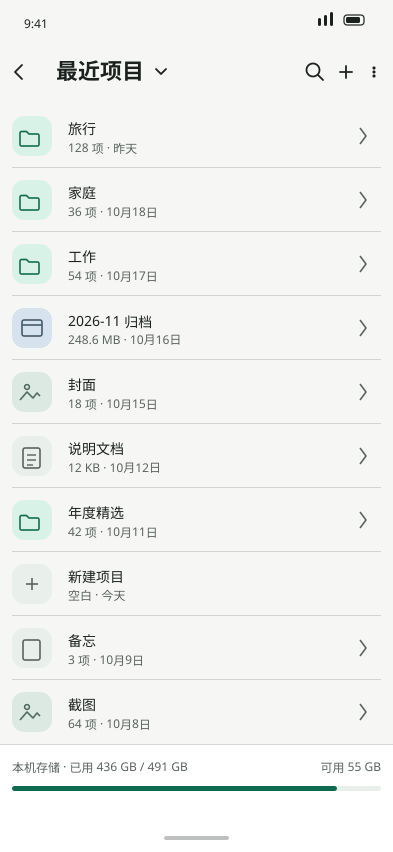
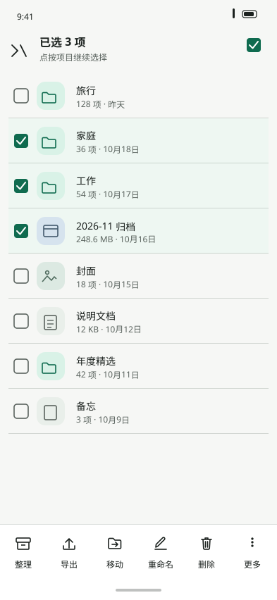
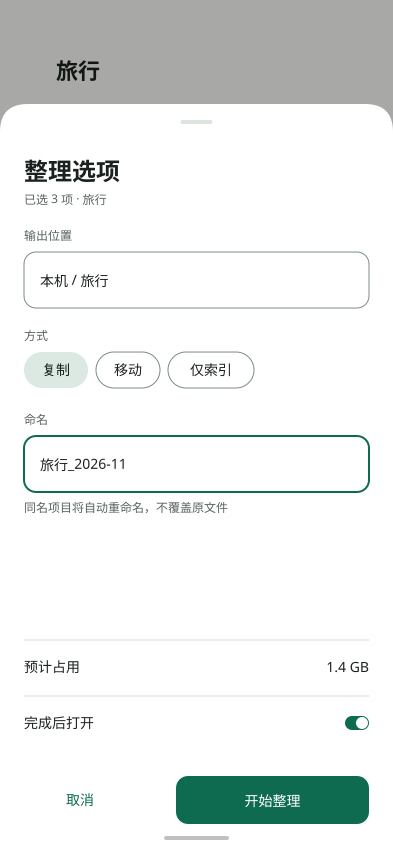
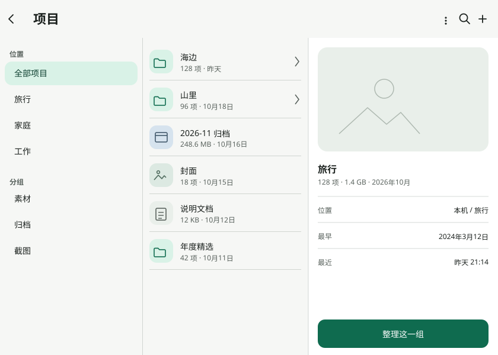

Zippest 设计语言
基准板 · 基线 Zippest 1.54.0 · 2026-11-14 · 数值来自 assets/tokens.css，与 tokens.json 同源
颜色角色
background · #F6F7F5
surface · #FFFFFF
primary · #0F6B4F
primaryContainer · #D9F2E7
secondaryContainer · #DCE9E2
tertiaryContainer · #D6E3EE
error · #A24617
errorContainer · #FBE7DC
muted · #59625D
outline · #7D8C82
字阶（同屏最多 4 种）
页面标题 24 / 32 SemiBoldheadlineSmall
顶栏标题 22 / 28 SemiBoldtitleLarge
分区标题 16 / 24 SemiBoldtitleMedium
默认正文 14 / 20bodyMedium
次要信息 12 / 16labelMedium
脚注 11 / 16labelSmall
结构基准

01 · 列表页：顶栏同底色、10 行 × 64、语义色方底图标、底部状态条

02 · 选择态：顶栏换成已选计数、行内复选框、底栏换成操作条

03 · 底部面板：88% 高、顶角 28、字段组、sticky 主按钮

04 · 宽屏三栏：240 导航 + 内容 + 320 第三栏（宽度按 840dp 基准）
这些是结构基准，不是截图：没有状态栏适配、系统字体回退或 200% 字号验证。
把它们和真实实现并排，检查行高、栏宽、面板高度这三组比例；颜色与字号以
assets/tokens.css 为准。修改 token 后，SVG 与本页要一起更新。